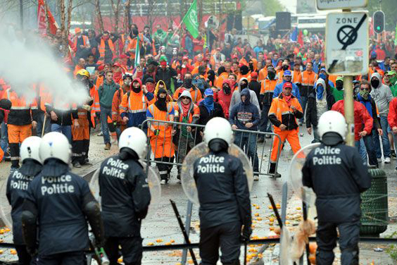

kv
|
26 november 2017
|
18u20
|
Bron: Guy Stevens
De Brusselse politie wist dat de aangekondigde betoging op het Poelaertplein zaterdagavond uit de hand kon lopen. Dat zegt Hans Messiaen van de politiedienst die betogingen screent, bij VRT Nieuws. Toch werd de betoging niet verboden. Zoals verwacht ontaardde het volledig en richtten relschoppers vernielingen aan in de hoofdstad. Een meerderjarige en twee minderjarigen zijn intussen vrijgelaten.
“Er waren berichten onderschept waaruit bleek dat een aantal jongeren de betoging wilde misbruiken om amok te maken”, aldus Messiaen. Maar toch kon de manifestatie gewoon doorgaan. “Het is onze taak om een risicoanalyse te voeren, die wij dan doorgeven aan de bestuurlijke overheid, meer bepaald de Brusselse burgemeester Philippe Close. Hij moet dan beslissen, dat is niet onze taak.”
De politiediensten onderzoeken nog uit welke hoek de sms kwam. “Bij de identificatie van de vorige twee rellen was het voornamelijk een deel van de moslimgemeenschap in Brussel die betrokken was”, zegt Messiaen. “En nu zijn er sterke aanwijzingen dat het uit hetzelfde milieu komt als de vorige rellen. Toch is er niet een specifieke groepering of aantal personen die achter deze incidenten zitten.”
“En nu zijn er sterke aanwijzingen dat het uit hetzelfde milieu komt als de vorige rellen. Toch is er niet een specifieke groepering of aantal personen die achter deze incidenten zitten.”
Bij de rellen van zaterdagavond werden heel wat vernielingen aangericht en werden 71 relschoppers aangehouden. De meerderjarige relschopper die gerechtelijk werd aangehouden, is vrijgelaten onder strikte voorwaarden. Twee van de drie gerechtelijk aangehouden minderjarigen werden vrijgelaten na verhoor. Een derde minderjarige is voor de jeugdrechter verschenen.
De voorbije weken gebeurden al drie zware incidenten in Brussel. Na de WK-kwalificatie van de nationale voetbalploeg van Marokko, richtten jongeren vernielingen aan in winkels en aan auto's. Vorige week waren er rellen op het Muntplein in Brussel, na een samenkomst die de snapchatster Vargasss92 had bijeengeroepen. En afgelopen nacht liep een betoging van slavernij tegen Libië dus uit de hand.

Leerlingen die thuis een andere taal spreken dan het Nederlands, mogen die ook gebruiken op de speelplaats en zelfs in de klas.
Bij een test blijken de drie populaire elektrische wagens veertig procent minder rijbereik te hebben dan in de catalogus vermeld staat.
De koers van de digitale munt bitcoin gaat hard op de 10.000 dollar af. Zal dit wel blijven duren en wat kunnen de gevolgen zijn?